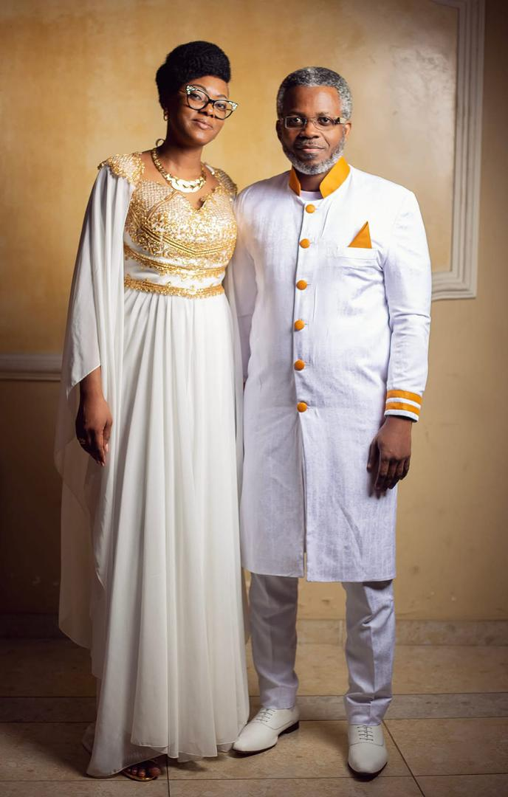

JESUS CHRIST Roi des rois
DIEU DES SITUATIONS LAZARE ET DES ORDONNANCES IRRÉVOCABLES
L'Apôtre Barack Israël et la Prophétesse Deborah Sarha Jérusalem sont des serviteurs de Dieu de nationalité gabonaise. Ils dirigent ensemble un Ministère Apostolique fondé sur la foi et la Parole de Dieu.
L'Apôtre Barack Israël a reçu du Seigneur Jésus-Christ une mission précise : préparer l'Église — la purifier, l'affermir dans la vérité et la sainteté — en vue du retour de Christ.
Depuis le Gabon, ce ministère porte un message de réveil et d'édification du Corps de Christ, exercé avec humilité, puissance et fidélité à la Parole de Dieu.
« Éphésiens 4 : 11-12 »
